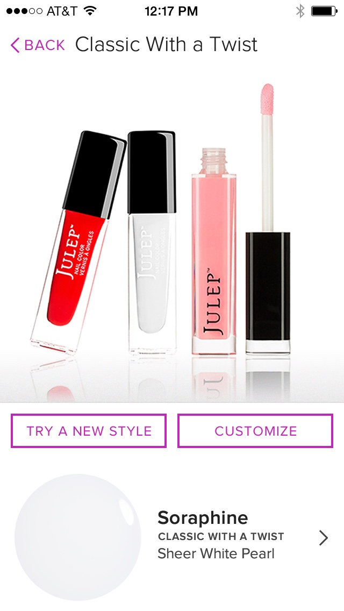
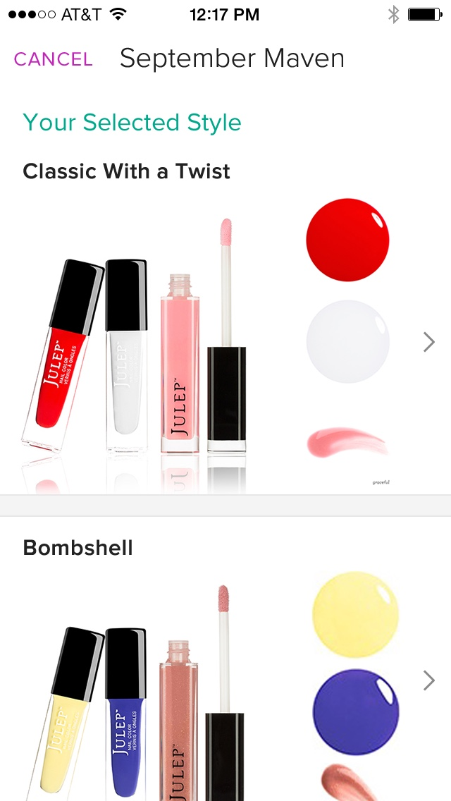
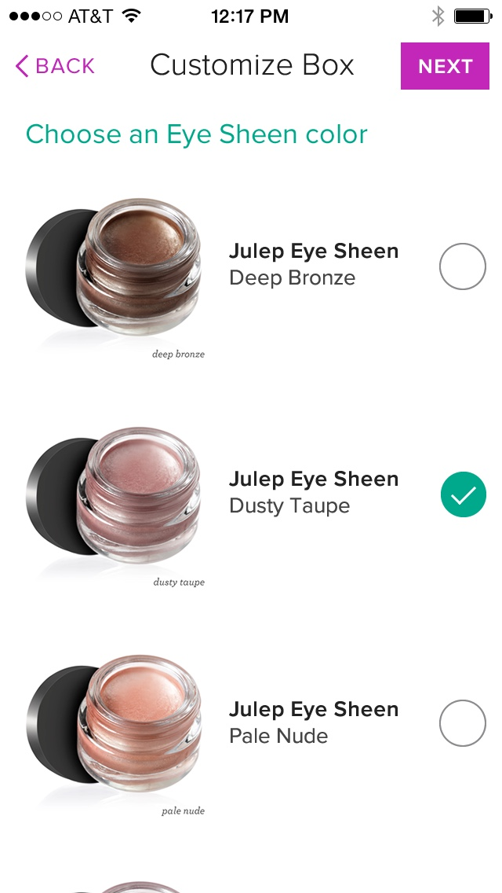

Version One
Minimum Viable Product
At first, the app was exclusive to existing Maven subscribers. Customers could see what was included in that month's box, pick a different style if they preferred, and sometimes choose a color for an item.



